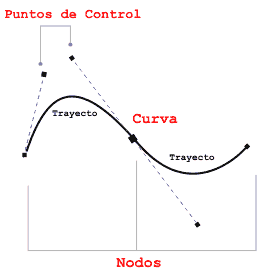
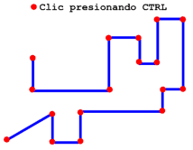
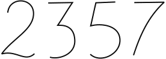
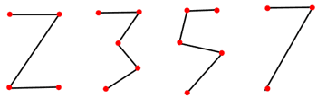
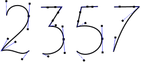
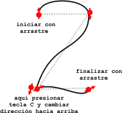
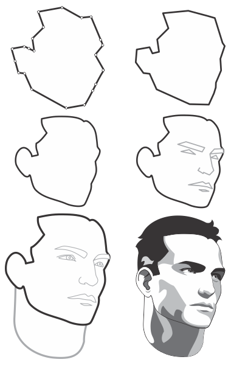
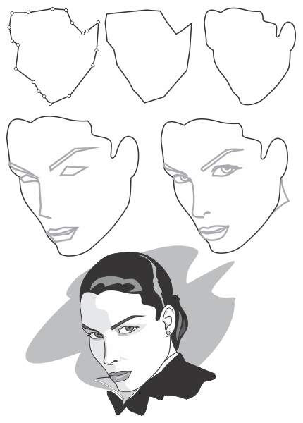

|
 |
 |
 |
 |
Las
Curvas según Bézier
Las 'curvas de Bézier' pueden tener forma recta
o realmente curva; algunos la denominan como 'líneas de Bézier'. La forma de
una curva o línea está controlada por la posición de sus nodos y sus puntos de
control.
Nodo: Un nodo no es
más que un punto en el espacio que sirve para unir el principio y el final de
un trayecto. Para crear cualquier trayecto necesitamos como mínimo 2 nodos.
Para crearlo basta hacer clic en la posición deseada.
Trayecto: es la
línea recta o curva formada por la unión de dos nodos.
Puntos de control:
cada nodo tiene por lo menos un punto de control, que funciona a modo de
palanca, manecilla o manejador y permite modificar el trayecto respectivo.
Curva: es la suma de
todos los trayectos necesarios para crear una forma y puede estar constituida
por dos o muchísimos nodos.

Lo Básico: Crear líneas rectas
El uso más sencillo de la herramienta Bézier es
la creación de líneas rectas, para ello sólo basta hacer clic donde queremos
iniciar el trayecto y arrastrando sin presionar el ratón, volvemos a hacer clic
donde terminará el trayecto.
- Usando la tecla CTRL restringimos los
trayectos para que sean perfectamente horizontales, verticales o diagonales.

- Para terminar un trayecto, presionamos la
barra espaciadora.
- Para volver a la herramienta Bézier y crear un trayecto distinto, presionamos
nuevamente la barra espaciadora.
A continuación nos ejercitaremos en el arte de
crear y manipular curvas, trayectos y nodos de la mano de las herramientas
BÉZIER Y FORMA, creando simples números como el ejemplo:

Lo intermedio: Crear líneas rectas y luego
curvar
El modo más sencillo de manipular curvas
consiste en crear líneas curvas rectas (aunque suene contradictorio) como vimos
en el ejemplo anterior; luego podemos usar el arsenal de posibilidades que nos
brinda la herramienta forma. Con esta técnica los números serán primeramente
rectos, así:

- Para modificar la curva seleccionamos todos
los nodos y haciendo clic el comando de la barra de Propiedades Convertir
línea en curva ya tenemos la opción de modificar los trayectos como curvas.
Pero por ahora, todos los nodos son asimétricos.
- Seleccionamos los nodos que queremos cambiar a
Uniforme o Simétrico para suavizar las curvas.
- Modificamos la posición de algunos nodos a
para darle la forma deseada.
- Manipulando los puntos de control mejoramos la forma.

Para seleccionar nodos debemos tener activa la herramienta Forma. Los podemos seleccionar uno por uno haciendo clic sobre ellos presionando MAYÚS o con una marquesina sobre todos los nodos deseados. En la barra de Propiedades tenemos la opción de seleccionar todos los nodos automáticamente con Seleccionar todos los nodos.
Lo avanzado: Crear rectas o Curvas sobre la
marcha
Esta técnica no significa que sea la mejor ni la
peor, pero requiere más dominio y práctica. A algunos les va muy bien usarla y
a otros les resulta incómoda. Consiste en dibujar las curvas en un solo paso,
sin parar, alternando entre líneas rectas y curvas. En todo caso, al final
siempre tendremos la posibilidad de modificarlas con la herramienta Forma. La
diferencia es que haciendo clic y arrastrando creamos el nodo y manipulamos los
puntos de control a la vez.
- Un clic y un arrastre crea un nodo y sus
puntos de control.
- Para cambiar la dirección del trayecto sobre la marcha, o sea, crear un nodo
asimétrico usamos la tecla C y arrastramos en el sentido deseado.
En el ejemplo, el círculo rojo con flecha indica
dónde se crea el nodo y hacia dónde se arrastran sus puntos de control para
crear la curva.

Calcar imágenes: Utilizando una
fotografía como base para realizar la ilustración.
Calcar imágenes es una forma muy sencilla de
dibujar curvas, pues nos permite guiarnos como si esta fuera una plantilla. La
foto tiene ahora muchos colores y contrastes oscuros. Si copiamos directamente
el contorno negro sobre la foto nuestra vista se cansará rápidamente. Por eso
conviene reducir la intensidad de los colores hasta un grado que nos permita
reconocer el objeto en la pantalla. Con el contorno negro y la herramienta mano
alzada podemos ir dibujando por encima de la foto aclarada sin perjudicar tanto
los ojos.
para poder dibujar tranquilamente sobre
fotografías es necesario hacer clic sobre la fotografía con el botón derecho
del ratón y seleccionar la opción Bloquear Objeto, de esto modo no se activará
la vectorización automática y no se podrá mover la fotografía accidentalmente .
Cuando ya no se necesite la fotografía de base vuelva a hacer clic con el botón
derecho del ratón sobre la misma y seleccione la opción Desbloquear Objeto,
para poder eliminarla.
Lo esencial para trabajar así es crear
los trayectos rectos para luego curvar.
- De preferencia debemos crear pocos nodos, para
luego ir añadiéndolos a medida que necesitemos.
- Un paso importante aquí es modificar el tipo de nodo; como inicialmente todos son Asimétricos (esquinados) necesitamos suavizar algunos convirtiéndolos a Uniforme.
- Donde se requieren cambios bruscos de dirección la elección es obvia: Simétrico.
Como practica realize el siguiente ejercicio:

